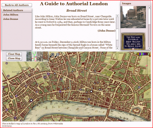

I suppose I’ve been remiss in pointing out a few things that have happened recently in relation to the work I’ve been doing. The first, and least important, is the creation of a couple Cafepress posters based on the Digital Humanities topic network project I ran, based on the suggestion of John Unsworth. The two images are the State of the Digital Humanities image above, which is a collection of the various topics and their constituent words from Comprehending the Digital Humanities, and the Community image that shows the topics and documents related to the word “community”.

A view of Bread Street and the lives of the authors related to that location.
The second is the official release of Martin Evans’ A Guide to Authorial London. This small site provides users with a glimpse into the lives of literary figures who lived in or visited London. It’s based on Dr. Evans’ original hand-crafted site and his biographies of these literary figures, with images and authors now linked to various locations throughout London. You can read more about it at The Human Experience. Now that tablets are appearing that are Flash-enabled, and given that Flash supports export into iPad and Android-compatible apps, I hope to transition Authorial London into a touch-aware app by the summer.

Finally, the Poetry Foundation ran an article in their Open Door series about the work I did with Peter Chen on visualizing the email correspondence of Robert Creeley.